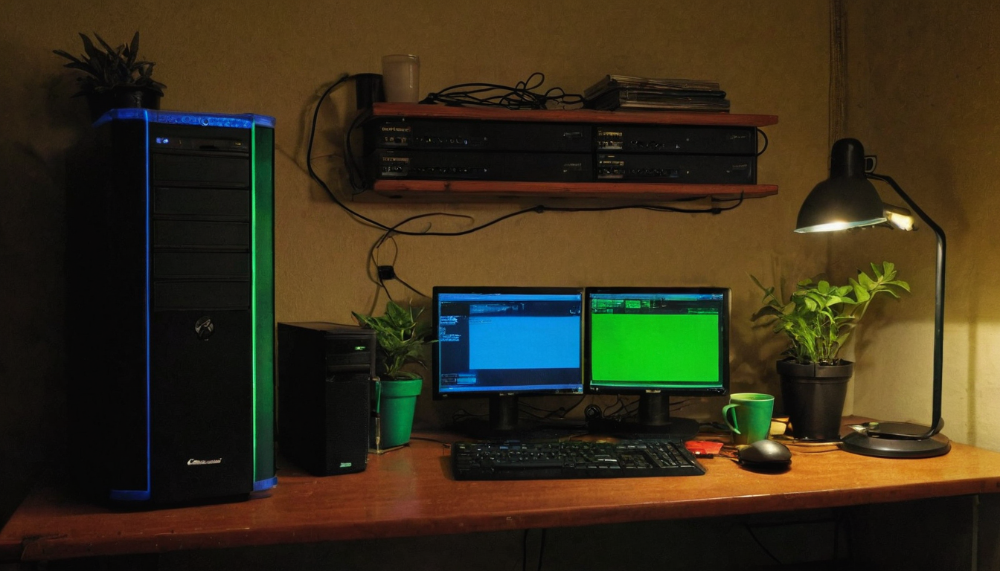
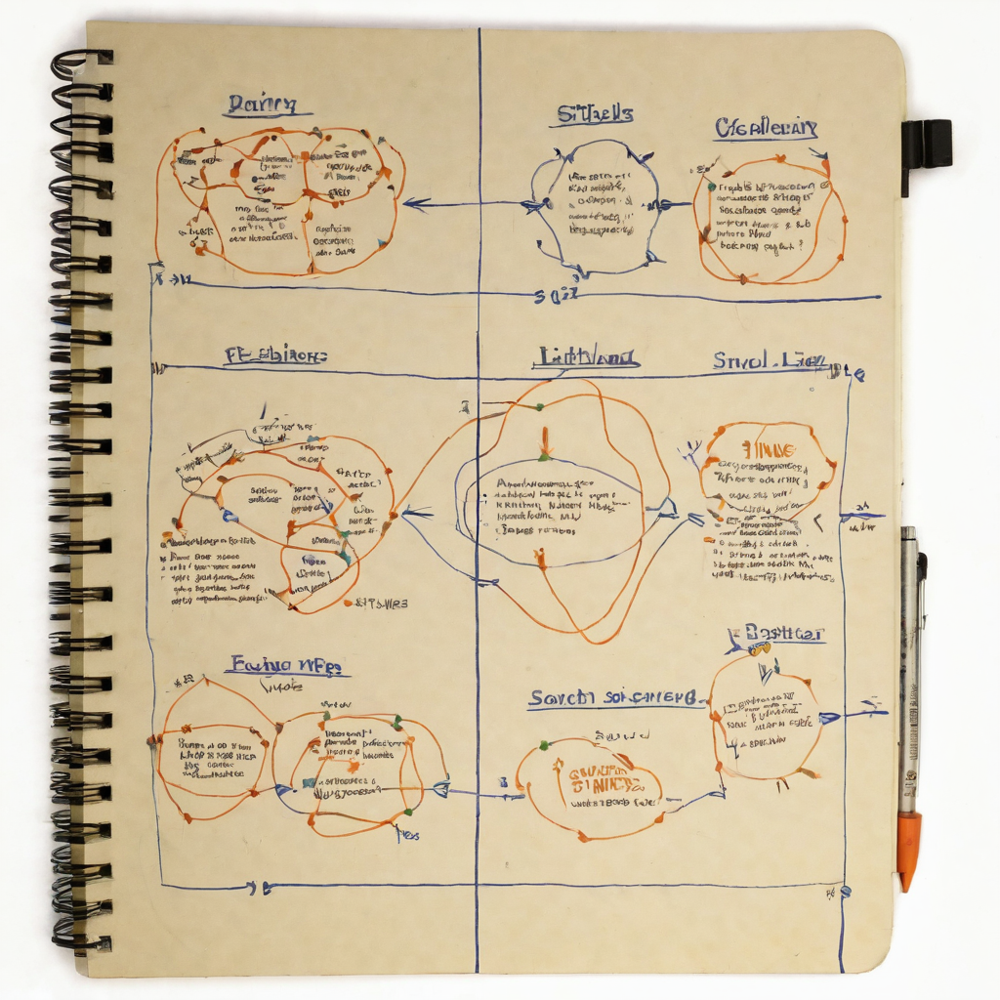

I bookmark a lot of Chia release announcements. Most people scroll past them because a version bump like 2.7.3 does not sound exciting. No big rebrand, no flashy new feature name, just a number ticking up. But those quiet point releases are usually where the real maintenance work happens, and that work is what keeps a network like Chia running smoothly for the people actually farming, running full nodes, or building on top of it.
@chia_project posted a short release announcement pointing people to two places: a blog post on chia.net covering the 2.7.3 release, and the standard chia.net downloads page for anyone ready to upgrade. The post itself is brief, just a "read more" link and an "upgrade today" link, which is typical for how Chia Network announces routine releases on X. The real detail lives in the linked blog post rather than the tweet.

Chia is infrastructure. Full node operators, farmers, and anyone running a lightweight wallet depend on these releases to stay in sync with the network, get bug fixes, and pick up performance or compatibility improvements. Point releases (the third number in a version like 2.7.3) are usually smaller and more targeted than major releases, which means less risk and less downtime for the people upgrading. That is a good thing. A healthy open source project ships these regularly instead of letting problems pile up until a big, disruptive release.
For anyone newer to Chia, this is also a decent reminder of how the ecosystem operates day to day. It is not just about token price or headlines. It is about a team continuing to push out maintenance releases, keep documentation and downloads current, and communicate directly with the community on a channel like X rather than burying updates somewhere hard to find.
What it does: Ships an incremental update to the Chia blockchain full node software, most likely covering fixes, stability improvements, or compatibility changes. The post itself does not spell out the specific changes, so the blog post linked from the tweet is the place to actually read what changed before upgrading.
Who it helps: Farmers running full nodes, plot managers, wallet users, and anyone building tools or services on top of Chia who needs to stay compatible with the current network version.
Why builders should care: If you have anything integrated with the Chia full node RPC, a CLI wrapper, a farming dashboard, or automation scripts, point releases like this are exactly the kind of thing to test against before rolling out to production. Small releases are usually low risk, but "usually" is doing some work in that sentence, so check the changelog rather than assuming.
What still needs work: Honestly, the announcement post alone does not give enough detail to know exactly what shipped. That is not a knock on Chia, it is just how release announcements on X tend to work: short and pointing to the real source. Anyone upgrading should read the actual blog post at chia.net rather than relying on the tweet.
What I would test first: If you run a node, spin up the update in a non-critical environment first, confirm sync and RPC behavior are unchanged, then roll it out to anything production-facing.
I like seeing these show up regularly. It tells me the team is still actively maintaining the software, not just letting it sit. Chia has been around long enough that I have watched a lot of these point releases come and go, and the boring, steady cadence is honestly a feature, not a bug. It means the project is being treated like real infrastructure instead of a one-and-done launch.
The one thing I will say plainly: the tweet itself does not tell you what changed, so do not skip the blog post. That is not a criticism, just practical advice before you upgrade anything that matters to you.
Worth keeping an eye on whether 2.7.3 introduces anything that affects farmers specifically, since that is where most of the community's daily attention lives. I would also watch for any follow-up point releases in the near term, since those sometimes come in quick succession right after a release like this if anything needs a fast patch. Nothing here is urgent or dramatic, just the normal rhythm of a project that keeps shipping.
Source: X post by @chia_project, https://x.com/i/web/status/2077878575252824371, retrieved on 2026-07-16.
External references: Chia 2.7.3 release blog post (https://www.chia.net/2026/07/16/chia-2-7-3-released/), Chia downloads page (http://chia.net/downloads).